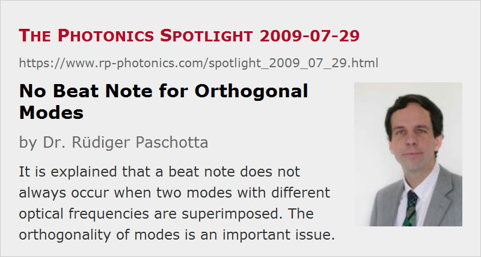

No Beat Note for Orthogonal Modes
Posted on 2009-07-29 as a part of the Photonics Spotlight (available as e-mail newsletter!)
Permanent link: https://www.rp-photonics.com/spotlight_2009_07_29.html
Author: Dr. Rüdiger Paschotta, RP Photonics Consulting GmbH
Abstract: It is explained that a beat note does not always occur when two modes with different optical frequencies are superimposed. The orthogonality of modes is an important issue.

Ref.: encyclopedia article on beat note
Imagine a situation where two different transverse modes with different optical frequencies and equal polarization directions oscillate simultaneously in a laser. For example, it could be a TEM00 mode and a TEM10 mode. Both frequencies are contained in the emitted laser beam. Most people would take it for granted that a photodetector, hit by that beam, would indicate a beat note with the difference of the two optical frequencies, assuming that the detection bandwidth is large enough to resolve the beat frequency. It may be astonishing to learn that this is not necessarily the case.
A crucial insight is to realize that the electric field distributions associated with different modes of an optical resonator are orthogonal. This means that their overlap integral is zero. (This is the complex field distribution of one mode times the complex conjugate of the field of the other mode, integrated over the full beam cross-section.) When calculating the total power of the superimposed beams, one sees that beat term would be proportional to that overlap integral, and is thus zero. In other words, the recorded total optical power is simply the sum of the optical powers of both modes, with no oscillating contribution in addition.
So there may be no beat note at all. Note, however, that orthogonality may easily be lost if the superimposed beam is truncated at an edge of the active area of the photodetector. This situation is of course easily obtained by somewhat misaligning the detector. It is even sufficient that the detector's responsivity is not uniform over the active area (e.g. when a part of it has been burned with a focused laser beam). In such cases, the beat note is recovered.
It is also instructive to consider two separate beams with different frequencies, both having e.g. Gaussian profiles. Their overlap integral can be very small, even if their intensity profiles overlap well on the detector, if the beams come from different directions. In that case, the relative optical phase varies across the beam profile, and the contributions to the overlap integral may cancel each other. Assuming two diffraction-limited beams, it can be shown that the overlap integral becomes small if the difference of angles exceeds the beam divergence angle. The larger the beam areas, the more critical is the angular adjustment required for recording a beat note.
This article is a posting of the Photonics Spotlight, authored by Dr. Rüdiger Paschotta. You may link to this page and cite it, because its location is permanent. See also the RP Photonics Encyclopedia.
Note that you can also receive the articles in the form of a newsletter or with an RSS feed.
Questions and Comments from Users
Here you can submit questions and comments. As far as they get accepted by the author, they will appear above this paragraph together with the author’s answer. The author will decide on acceptance based on certain criteria. Essentially, the issue must be of sufficiently broad interest.
Please do not enter personal data here; we would otherwise delete it soon. (See also our privacy declaration.) If you wish to receive personal feedback or consultancy from the author, please contact him e.g. via e-mail.
By submitting the information, you give your consent to the potential publication of your inputs on our website according to our rules. (If you later retract your consent, we will delete those inputs.) As your inputs are first reviewed by the author, they may be published with some delay.
|  |
If you like this page, please share the link with your friends and colleagues, e.g. via social media:
These sharing buttons are implemented in a privacy-friendly way!